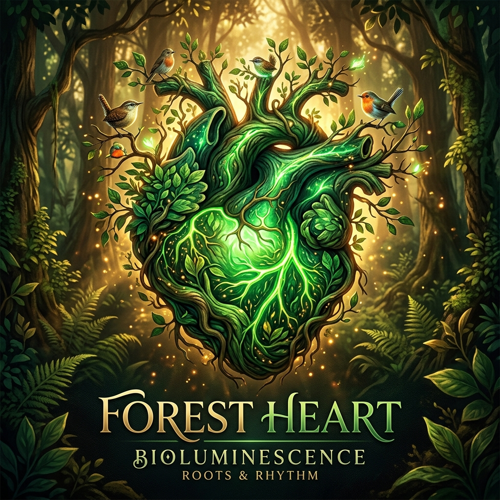
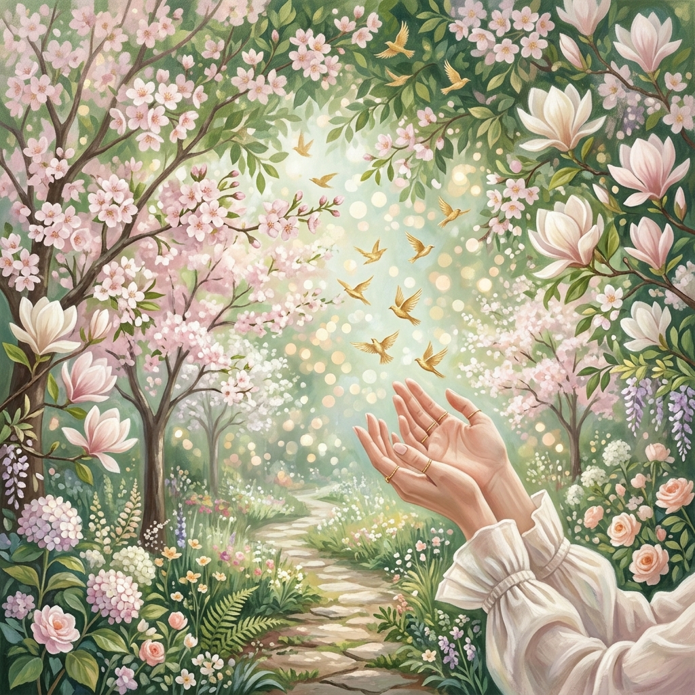

Latido Verde Green Heartbeat Battito Verde 绿色的心跳 نبض أخضر Зелёное Сердцебиение Зелене Серцебиття Grüner Herzschlag Battement Vert 緑の鼓動 Batida Verde
Por bosques y jardines, mi espíritu contempla y siente,
Abrazo a cada árbol, sintiendo su latir latente.
En cada hoja que cae, en cada rama que se mece,
Oigo el susurro místico que a mi alma estremece. Through forests and gardens, my spirit contemplates and feels,
I embrace each tree, sensing its latent beating.
In every leaf that falls, in every branch that sways,
I hear the mystic whisper that makes my soul tremble. Per boschi e giardini, il mio spirito contempla e sente,
Abbraccio ogni albero, sentendo il suo battito latente.
In ogni foglia che cade, in ogni ramo che si dondola,
Sento il sussurro mistico che la mia anima fa tremare. 穿越森林和花园，我的灵魂在凝视和感受，
我拥抱每一棵树，感受它潜在的脉动。
在每一片飘落的叶子中，在每一根摇曳的枝条中，
我听到那神秘的低语，令我的灵魂颤栗。 عبر الغابات والحدائق، تتأمل روحي وتشعر،
أحتضن كل شجرة، أحسّ بنبضها الكامن.
في كل ورقة تسقط، في كل غصن يتمايل،
أسمع الهمس الصوفي الذي يهزّ روحي. По лесам и садам мой дух созерцает и чувствует,
Обнимаю каждое дерево, ощущая его скрытый пульс.
В каждом падающем листе, в каждой качающейся ветке
Слышу мистический шёпот, что потрясает мою душу. По лісах і садах мій дух споглядає й відчуває,
Обіймаю кожне дерево, відчуваючи його прихований пульс.
У кожному листку, що падає, у кожній гілці, що хитається,
Чую містичний шепіт, що зворушує мою душу. Durch Wälder und Gärten betrachtet und fühlt mein Geist,
Ich umarme jeden Baum und spüre seinen verborgenen Puls.
In jedem Blatt, das fällt, in jedem Ast, der sich wiegt,
Höre ich das mystische Flüstern, das meine Seele erschüttert. À travers forêts et jardins, mon esprit contemple et ressent,
J'embrasse chaque arbre, sentant son battement latent.
Dans chaque feuille qui tombe, dans chaque branche qui se balance,
J'entends le murmure mystique qui fait frémir mon âme. 森と庭を巡り、わが魂は見つめ感じる、
一本一本の木を抱きしめ、その潜む鼓動を感じる。
落ちる葉の一枚一枚、揺れる枝の一本一本に、
魂を震わせる神秘のささやきを聞く。 Por bosques e jardins, meu espírito contempla e sente,
Abraço cada árvore, sentindo o seu latir latente.
Em cada folha que cai, em cada ramo que se balança,
Ouço o sussurro místico que a minha alma estremece.
Abrazo a cada árbol, sintiendo su latir latente.
En cada hoja que cae, en cada rama que se mece,
Oigo el susurro místico que a mi alma estremece. Through forests and gardens, my spirit contemplates and feels,
I embrace each tree, sensing its latent beating.
In every leaf that falls, in every branch that sways,
I hear the mystic whisper that makes my soul tremble. Per boschi e giardini, il mio spirito contempla e sente,
Abbraccio ogni albero, sentendo il suo battito latente.
In ogni foglia che cade, in ogni ramo che si dondola,
Sento il sussurro mistico che la mia anima fa tremare. 穿越森林和花园，我的灵魂在凝视和感受，
我拥抱每一棵树，感受它潜在的脉动。
在每一片飘落的叶子中，在每一根摇曳的枝条中，
我听到那神秘的低语，令我的灵魂颤栗。 عبر الغابات والحدائق، تتأمل روحي وتشعر،
أحتضن كل شجرة، أحسّ بنبضها الكامن.
في كل ورقة تسقط، في كل غصن يتمايل،
أسمع الهمس الصوفي الذي يهزّ روحي. По лесам и садам мой дух созерцает и чувствует,
Обнимаю каждое дерево, ощущая его скрытый пульс.
В каждом падающем листе, в каждой качающейся ветке
Слышу мистический шёпот, что потрясает мою душу. По лісах і садах мій дух споглядає й відчуває,
Обіймаю кожне дерево, відчуваючи його прихований пульс.
У кожному листку, що падає, у кожній гілці, що хитається,
Чую містичний шепіт, що зворушує мою душу. Durch Wälder und Gärten betrachtet und fühlt mein Geist,
Ich umarme jeden Baum und spüre seinen verborgenen Puls.
In jedem Blatt, das fällt, in jedem Ast, der sich wiegt,
Höre ich das mystische Flüstern, das meine Seele erschüttert. À travers forêts et jardins, mon esprit contemple et ressent,
J'embrasse chaque arbre, sentant son battement latent.
Dans chaque feuille qui tombe, dans chaque branche qui se balance,
J'entends le murmure mystique qui fait frémir mon âme. 森と庭を巡り、わが魂は見つめ感じる、
一本一本の木を抱きしめ、その潜む鼓動を感じる。
落ちる葉の一枚一枚、揺れる枝の一本一本に、
魂を震わせる神秘のささやきを聞く。 Por bosques e jardins, meu espírito contempla e sente,
Abraço cada árvore, sentindo o seu latir latente.
Em cada folha que cai, em cada ramo que se balança,
Ouço o sussurro místico que a minha alma estremece.
Con ilusión me uno a poetas, a almas que riman con amor,
Juntos elevamos nuestra voz, en un eco protector.
Cantamos sobre frutales, de colores que deslumbran,
Sobre pájaros que sobrevuelan, con trinos que nunca se esfuman. With hope I join the poets, souls who rhyme with love,
Together we raise our voice, in a protective echo.
We sing about fruit trees, of dazzling colors,
About birds that fly above, with songs that never fade. Con illusione mi unisco ai poeti, ad anime che rimano con amore,
Insieme alziamo la voce, in un eco protettore.
Cantiamo degli alberi da frutto, dai colori che abbagliano,
Degli uccelli che sorvolano, con trilli che mai svaniscono. 我满怀希望地加入诗人的行列，那些以爱入韵的灵魂，
我们共同发出声音，形成保护的回声。
我们歌唱果树，歌唱令人目眩的色彩，
歌唱飞翔的鸟儿，它们的啼鸣永不消逝。 بأمل أنضم إلى الشعراء، إلى أرواح تقافي بالحب،
معاً نرفع صوتنا، في صدى حامٍ.
نغنّي عن أشجار الفاكهة، بألوان تبهر،
عن طيور تحلّق، بزقزقات لا تتلاشى أبداً. С надеждой я присоединяюсь к поэтам, к душам, рифмующим с любовью,
Вместе мы возвышаем голос, в защитном эхе.
Поём о фруктовых деревьях, об ослепительных красках,
О птицах, парящих над нами, с трелями, что не стихают. З надією я приєднуюся до поетів, до душ, що римують з любов'ю,
Разом ми підносимо голос, у захисному відлунні.
Співаємо про фруктові дерева, про кольори, що осліплюють,
Про птахів, що ширяють, з тріллями, що ніколи не вщухають. Mit Hoffnung schließe ich mich den Dichtern an, Seelen, die mit Liebe reimen,
Gemeinsam erheben wir unsere Stimme, in einem schützenden Echo.
Wir singen von Obstbäumen, von schillernden Farben,
Von Vögeln, die darüber fliegen, mit Liedern, die nie verblassen. Avec espoir je rejoins les poètes, les âmes qui riment avec l'amour,
Ensemble nous élevons notre voix, dans un écho protecteur.
Nous chantons les fruitiers, aux couleurs éblouissantes,
Les oiseaux qui survolent, aux trilles qui jamais ne s'estompent. 希望を胸に詩人たちに加わる、愛で韻を踏む魂たちと、
共に声を上げる、守りの響きとなって。
果樹を歌う、まばゆい色彩を、
頭上を飛ぶ鳥たちを、決して消えないさえずりを。 Com ilusão me uno a poetas, a almas que rimam com amor,
Juntos elevamos nossa voz, num eco protetor.
Cantamos sobre fruteiras, de cores que deslumbram,
Sobre pássaros que sobrevoam, com trinados que nunca se apagam.
Juntos elevamos nuestra voz, en un eco protector.
Cantamos sobre frutales, de colores que deslumbran,
Sobre pájaros que sobrevuelan, con trinos que nunca se esfuman. With hope I join the poets, souls who rhyme with love,
Together we raise our voice, in a protective echo.
We sing about fruit trees, of dazzling colors,
About birds that fly above, with songs that never fade. Con illusione mi unisco ai poeti, ad anime che rimano con amore,
Insieme alziamo la voce, in un eco protettore.
Cantiamo degli alberi da frutto, dai colori che abbagliano,
Degli uccelli che sorvolano, con trilli che mai svaniscono. 我满怀希望地加入诗人的行列，那些以爱入韵的灵魂，
我们共同发出声音，形成保护的回声。
我们歌唱果树，歌唱令人目眩的色彩，
歌唱飞翔的鸟儿，它们的啼鸣永不消逝。 بأمل أنضم إلى الشعراء، إلى أرواح تقافي بالحب،
معاً نرفع صوتنا، في صدى حامٍ.
نغنّي عن أشجار الفاكهة، بألوان تبهر،
عن طيور تحلّق، بزقزقات لا تتلاشى أبداً. С надеждой я присоединяюсь к поэтам, к душам, рифмующим с любовью,
Вместе мы возвышаем голос, в защитном эхе.
Поём о фруктовых деревьях, об ослепительных красках,
О птицах, парящих над нами, с трелями, что не стихают. З надією я приєднуюся до поетів, до душ, що римують з любов'ю,
Разом ми підносимо голос, у захисному відлунні.
Співаємо про фруктові дерева, про кольори, що осліплюють,
Про птахів, що ширяють, з тріллями, що ніколи не вщухають. Mit Hoffnung schließe ich mich den Dichtern an, Seelen, die mit Liebe reimen,
Gemeinsam erheben wir unsere Stimme, in einem schützenden Echo.
Wir singen von Obstbäumen, von schillernden Farben,
Von Vögeln, die darüber fliegen, mit Liedern, die nie verblassen. Avec espoir je rejoins les poètes, les âmes qui riment avec l'amour,
Ensemble nous élevons notre voix, dans un écho protecteur.
Nous chantons les fruitiers, aux couleurs éblouissantes,
Les oiseaux qui survolent, aux trilles qui jamais ne s'estompent. 希望を胸に詩人たちに加わる、愛で韻を踏む魂たちと、
共に声を上げる、守りの響きとなって。
果樹を歌う、まばゆい色彩を、
頭上を飛ぶ鳥たちを、決して消えないさえずりを。 Com ilusão me uno a poetas, a almas que rimam com amor,
Juntos elevamos nossa voz, num eco protetor.
Cantamos sobre fruteiras, de cores que deslumbram,
Sobre pássaros que sobrevoam, com trinados que nunca se apagam.
Convoco a artistas, músicos y actores de renombre,
Que se sumen a este canto, que resuene en cada hombre.
Porque talar sin motivo, solo por construir sin cesar,
Es olvidar la esencia, es dejar de respirar. I summon artists, musicians and actors of renown,
To join this song, to resound in every soul.
Because felling without reason, just to build without end,
Is to forget the essence, is to stop breathing. Convoco artisti, musicisti e attori di fama,
Che si uniscano a questo canto, che risuoni in ogni uomo.
Perché abbattere senza motivo, solo per costruire senza sosta,
È dimenticare l'essenza, è smettere di respirare. 我召唤艺术家、音乐家和著名演员，
加入这首歌，让它在每个人心中回响。
因为无缘无故地砍伐，只为无休止地建造，
就是遗忘本质，就是停止呼吸。 أستدعي الفنانين والموسيقيين والممثلين المشهورين،
ليُضافوا إلى هذا النشيد، ليتردد في كل نفس.
لأن القطع دون سبب، فقط للبناء دون توقف،
هو نسيان الجوهر، هو التوقف عن التنفس. Призываю художников, музыкантов и знаменитых актёров,
Присоединиться к этой песне, чтоб звучала в каждом сердце.
Потому что рубить без причины, лишь строить без конца —
Это забыть суть, это перестать дышать. Закликаю митців, музикантів і відомих акторів,
Долучитися до цієї пісні, щоб лунала в кожному серці.
Бо рубати без причини, лише будувати без кінця —
Це забути суть, це перестати дихати. Ich rufe Künstler, Musiker und berühmte Schauspieler,
Sich diesem Lied anzuschließen, das in jeder Seele erklingt.
Denn ohne Grund zu fällen, nur um endlos zu bauen,
Heißt das Wesentliche vergessen, heißt aufhören zu atmen. Je convoque artistes, musiciens et acteurs de renom,
Qu'ils se joignent à ce chant, qu'il résonne en chaque homme.
Car abattre sans raison, juste pour bâtir sans cesse,
C'est oublier l'essence, c'est cesser de respirer. 名高い芸術家、音楽家、俳優たちに呼びかける、
この歌に加わり、すべての人の心に響かせよう。
理由なく木を倒し、ただ際限なく建てることは、
本質を忘れること、呼吸をやめること。 Convoco artistas, músicos e atores de renome,
Que se juntem a este canto, que ressoe em cada homem.
Porque abater sem motivo, só por construir sem cessar,
É esquecer a essência, é deixar de respirar.
Que se sumen a este canto, que resuene en cada hombre.
Porque talar sin motivo, solo por construir sin cesar,
Es olvidar la esencia, es dejar de respirar. I summon artists, musicians and actors of renown,
To join this song, to resound in every soul.
Because felling without reason, just to build without end,
Is to forget the essence, is to stop breathing. Convoco artisti, musicisti e attori di fama,
Che si uniscano a questo canto, che risuoni in ogni uomo.
Perché abbattere senza motivo, solo per costruire senza sosta,
È dimenticare l'essenza, è smettere di respirare. 我召唤艺术家、音乐家和著名演员，
加入这首歌，让它在每个人心中回响。
因为无缘无故地砍伐，只为无休止地建造，
就是遗忘本质，就是停止呼吸。 أستدعي الفنانين والموسيقيين والممثلين المشهورين،
ليُضافوا إلى هذا النشيد، ليتردد في كل نفس.
لأن القطع دون سبب، فقط للبناء دون توقف،
هو نسيان الجوهر، هو التوقف عن التنفس. Призываю художников, музыкантов и знаменитых актёров,
Присоединиться к этой песне, чтоб звучала в каждом сердце.
Потому что рубить без причины, лишь строить без конца —
Это забыть суть, это перестать дышать. Закликаю митців, музикантів і відомих акторів,
Долучитися до цієї пісні, щоб лунала в кожному серці.
Бо рубати без причини, лише будувати без кінця —
Це забути суть, це перестати дихати. Ich rufe Künstler, Musiker und berühmte Schauspieler,
Sich diesem Lied anzuschließen, das in jeder Seele erklingt.
Denn ohne Grund zu fällen, nur um endlos zu bauen,
Heißt das Wesentliche vergessen, heißt aufhören zu atmen. Je convoque artistes, musiciens et acteurs de renom,
Qu'ils se joignent à ce chant, qu'il résonne en chaque homme.
Car abattre sans raison, juste pour bâtir sans cesse,
C'est oublier l'essence, c'est cesser de respirer. 名高い芸術家、音楽家、俳優たちに呼びかける、
この歌に加わり、すべての人の心に響かせよう。
理由なく木を倒し、ただ際限なく建てることは、
本質を忘れること、呼吸をやめること。 Convoco artistas, músicos e atores de renome,
Que se juntem a este canto, que ressoe em cada homem.
Porque abater sem motivo, só por construir sem cessar,
É esquecer a essência, é deixar de respirar.
Los árboles nos brindan vida, sombra, refugio y alimento,
Su importancia es vital, en este y todo momento.
Así, con poemas y arte, a todos quiero enseñar,
La urgencia de salvar árboles, y a la Madre Tierra abrazar. The trees give us life, shade, shelter and nourishment,
Their importance is vital, in this and every moment.
Thus, with poems and art, I want to teach everyone,
The urgency of saving trees, and embracing Mother Earth. Gli alberi ci donano vita, ombra, rifugio e nutrimento,
La loro importanza è vitale, in questo e ogni momento.
Così, con poesie e arte, a tutti voglio insegnare,
L'urgenza di salvare gli alberi, e la Madre Terra abbracciare. 树木赐予我们生命、阴凉、庇护和食物，
它们的重要性是至关紧要的，在此刻和每一刻。
因此，用诗歌和艺术，我想教会所有人，
拯救树木的紧迫性，以及拥抱大地母亲。 الأشجار تمنحنا الحياة والظل والمأوى والغذاء،
أهميتها حيوية، في هذه اللحظة وكل لحظة.
هكذا، بالشعر والفن، أريد أن أعلّم الجميع،
ضرورة إنقاذ الأشجار، واحتضان أمنا الأرض. Деревья дарят нам жизнь, тень, убежище и пищу,
Их значение жизненно важно, в этот и каждый миг.
И вот стихами и искусством я хочу всех научить:
Спасать деревья — это срочно, обнять Мать-Землю. Дерева дарують нам життя, тінь, притулок і їжу,
Їхня важливість життєво необхідна, у цю і кожну мить.
Тож віршами й мистецтвом я хочу всіх навчити:
Рятувати дерева — це невідкладно, обійняти Матір-Землю. Die Bäume schenken uns Leben, Schatten, Zuflucht und Nahrung,
Ihre Bedeutung ist lebenswichtig, in diesem und jedem Moment.
So will ich mit Gedichten und Kunst allen vermitteln,
Die Dringlichkeit, Bäume zu retten und Mutter Erde zu umarmen. Les arbres nous offrent la vie, l'ombre, le refuge et la nourriture,
Leur importance est vitale, en cet instant et en tout moment.
Ainsi, par la poésie et l'art, je veux enseigner à tous,
L'urgence de sauver les arbres, et d'embrasser la Terre Mère. 木々は私たちに命、木陰、避難所、そして糧を与える、
その重要さは不可欠、今この瞬間も、いつの時も。
だからこそ詩と芸術で、すべての人に教えたい、
木を救う緊急性を、そして母なる大地を抱きしめることを。 As árvores nos dão vida, sombra, refúgio e alimento,
A sua importância é vital, neste e em todo momento.
Assim, com poemas e arte, a todos quero ensinar,
A urgência de salvar árvores, e a Mãe Terra abraçar.
Su importancia es vital, en este y todo momento.
Así, con poemas y arte, a todos quiero enseñar,
La urgencia de salvar árboles, y a la Madre Tierra abrazar. The trees give us life, shade, shelter and nourishment,
Their importance is vital, in this and every moment.
Thus, with poems and art, I want to teach everyone,
The urgency of saving trees, and embracing Mother Earth. Gli alberi ci donano vita, ombra, rifugio e nutrimento,
La loro importanza è vitale, in questo e ogni momento.
Così, con poesie e arte, a tutti voglio insegnare,
L'urgenza di salvare gli alberi, e la Madre Terra abbracciare. 树木赐予我们生命、阴凉、庇护和食物，
它们的重要性是至关紧要的，在此刻和每一刻。
因此，用诗歌和艺术，我想教会所有人，
拯救树木的紧迫性，以及拥抱大地母亲。 الأشجار تمنحنا الحياة والظل والمأوى والغذاء،
أهميتها حيوية، في هذه اللحظة وكل لحظة.
هكذا، بالشعر والفن، أريد أن أعلّم الجميع،
ضرورة إنقاذ الأشجار، واحتضان أمنا الأرض. Деревья дарят нам жизнь, тень, убежище и пищу,
Их значение жизненно важно, в этот и каждый миг.
И вот стихами и искусством я хочу всех научить:
Спасать деревья — это срочно, обнять Мать-Землю. Дерева дарують нам життя, тінь, притулок і їжу,
Їхня важливість життєво необхідна, у цю і кожну мить.
Тож віршами й мистецтвом я хочу всіх навчити:
Рятувати дерева — це невідкладно, обійняти Матір-Землю. Die Bäume schenken uns Leben, Schatten, Zuflucht und Nahrung,
Ihre Bedeutung ist lebenswichtig, in diesem und jedem Moment.
So will ich mit Gedichten und Kunst allen vermitteln,
Die Dringlichkeit, Bäume zu retten und Mutter Erde zu umarmen. Les arbres nous offrent la vie, l'ombre, le refuge et la nourriture,
Leur importance est vitale, en cet instant et en tout moment.
Ainsi, par la poésie et l'art, je veux enseigner à tous,
L'urgence de sauver les arbres, et d'embrasser la Terre Mère. 木々は私たちに命、木陰、避難所、そして糧を与える、
その重要さは不可欠、今この瞬間も、いつの時も。
だからこそ詩と芸術で、すべての人に教えたい、
木を救う緊急性を、そして母なる大地を抱きしめることを。 As árvores nos dão vida, sombra, refúgio e alimento,
A sua importância é vital, neste e em todo momento.
Assim, com poemas e arte, a todos quero ensinar,
A urgência de salvar árvores, e a Mãe Terra abraçar.
Porque en cada trino y fruto, en cada hoja que se mece,
Hay un mensaje profundo, que al corazón estremece.
Amemos a los árboles, cuidémoslos con devoción,
Pues en su bienestar, hallamos nuestra salvación. Because in every birdsong and fruit, in every leaf that sways,
There is a profound message, that makes the heart tremble.
Let us love the trees, let us tend them with devotion,
For in their well-being, we find our salvation. Perché in ogni trillo e frutto, in ogni foglia che si dondola,
C'è un messaggio profondo, che fa tremare il cuore.
Amiamo gli alberi, curiamoli con devozione,
Perché nel loro benessere, troviamo la nostra salvezza. 因为在每一声鸟鸣和果实中，在每一片摇曳的叶子中，
有一条深刻的信息，令心灵震颤。
让我们热爱树木，用虔诚呵护它们，
因为在它们的安好中，我们找到了救赎。 لأن في كل زقزقة وثمرة، في كل ورقة تتمايل،
هناك رسالة عميقة، تهزّ القلب.
لنحب الأشجار، لنعتنِ بها بتفانٍ،
ففي رفاهيتها، نجد خلاصنا. Ведь в каждой трели и каждом плоде, в каждом качающемся листе
Есть глубокое послание, что потрясает сердце.
Давайте любить деревья, давайте ухаживать за ними с преданностью,
Ибо в их благополучии мы находим наше спасение. Бо в кожній тріллі й кожному плоді, в кожному листку, що хитається,
Є глибоке послання, що зворушує серце.
Давайте любити дерева, доглядати їх з відданістю,
Бо в їхньому благополуччі ми знаходимо наше спасіння. Denn in jedem Gesang und jeder Frucht, in jedem Blatt, das sich wiegt,
Liegt eine tiefe Botschaft, die das Herz erschüttert.
Lasst uns die Bäume lieben, lasst uns sie mit Hingabe pflegen,
Denn in ihrem Wohlergehen finden wir unsere Erlösung. Car dans chaque trille et chaque fruit, dans chaque feuille qui se balance,
Il y a un message profond, qui fait frémir le cœur.
Aimons les arbres, prenons-en soin avec dévotion,
Car dans leur bien-être, nous trouvons notre salut. なぜならすべてのさえずりと果実の中に、揺れるすべての葉の中に、
心を震わせる深いメッセージがあるから。
木々を愛し、献身的に世話をしよう、
木々の幸せの中に、私たちの救いがあるのだから。 Porque em cada trinado e fruto, em cada folha que se balança,
Há uma mensagem profunda, que ao coração estremece.
Amemos as árvores, cuidemo-las com devoção,
Pois no seu bem-estar, encontramos a nossa salvação.
Hay un mensaje profundo, que al corazón estremece.
Amemos a los árboles, cuidémoslos con devoción,
Pues en su bienestar, hallamos nuestra salvación. Because in every birdsong and fruit, in every leaf that sways,
There is a profound message, that makes the heart tremble.
Let us love the trees, let us tend them with devotion,
For in their well-being, we find our salvation. Perché in ogni trillo e frutto, in ogni foglia che si dondola,
C'è un messaggio profondo, che fa tremare il cuore.
Amiamo gli alberi, curiamoli con devozione,
Perché nel loro benessere, troviamo la nostra salvezza. 因为在每一声鸟鸣和果实中，在每一片摇曳的叶子中，
有一条深刻的信息，令心灵震颤。
让我们热爱树木，用虔诚呵护它们，
因为在它们的安好中，我们找到了救赎。 لأن في كل زقزقة وثمرة، في كل ورقة تتمايل،
هناك رسالة عميقة، تهزّ القلب.
لنحب الأشجار، لنعتنِ بها بتفانٍ،
ففي رفاهيتها، نجد خلاصنا. Ведь в каждой трели и каждом плоде, в каждом качающемся листе
Есть глубокое послание, что потрясает сердце.
Давайте любить деревья, давайте ухаживать за ними с преданностью,
Ибо в их благополучии мы находим наше спасение. Бо в кожній тріллі й кожному плоді, в кожному листку, що хитається,
Є глибоке послання, що зворушує серце.
Давайте любити дерева, доглядати їх з відданістю,
Бо в їхньому благополуччі ми знаходимо наше спасіння. Denn in jedem Gesang und jeder Frucht, in jedem Blatt, das sich wiegt,
Liegt eine tiefe Botschaft, die das Herz erschüttert.
Lasst uns die Bäume lieben, lasst uns sie mit Hingabe pflegen,
Denn in ihrem Wohlergehen finden wir unsere Erlösung. Car dans chaque trille et chaque fruit, dans chaque feuille qui se balance,
Il y a un message profond, qui fait frémir le cœur.
Aimons les arbres, prenons-en soin avec dévotion,
Car dans leur bien-être, nous trouvons notre salut. なぜならすべてのさえずりと果実の中に、揺れるすべての葉の中に、
心を震わせる深いメッセージがあるから。
木々を愛し、献身的に世話をしよう、
木々の幸せの中に、私たちの救いがあるのだから。 Porque em cada trinado e fruto, em cada folha que se balança,
Há uma mensagem profunda, que ao coração estremece.
Amemos as árvores, cuidemo-las com devoção,
Pois no seu bem-estar, encontramos a nossa salvação.
En un pacto silente, a cada árbol me acerco,
Abrazo su esencia, siento su pulso interno.
Con ellos intercambio energía, esperanza y amor,
Por un mundo en armonía, sin guerra ni dolor. In a silent pact, I approach each tree,
I embrace its essence, I feel its inner pulse.
With them I exchange energy, hope and love,
For a world in harmony, without war or pain. In un patto silente, ad ogni albero mi avvicino,
Abbraccio la sua essenza, sento il suo polso interno.
Con loro scambio energia, speranza e amore,
Per un mondo in armonia, senza guerra né dolore. 在一个沉默的契约中，我走近每一棵树，
拥抱它的本质，感受它内在的脉搏。
与它们交换能量、希望和爱，
为了一个和谐的世界，没有战争也没有痛苦。 في ميثاق صامت، أقترب من كل شجرة،
أحتضن جوهرها، أشعر بنبضها الداخلي.
معها أتبادل الطاقة والأمل والحب،
من أجل عالم في انسجام، بلا حرب ولا ألم. В молчаливом пакте я подхожу к каждому дереву,
Обнимаю его суть, чувствую его внутренний пульс.
С ними я обмениваюсь энергией, надеждой и любовью
Ради мира в гармонии, без войны и без боли. У мовчазному пакті я наближаюся до кожного дерева,
Обіймаю його сутність, відчуваю його внутрішній пульс.
З ними я обмінюю енергію, надію й любов
Заради світу в гармонії, без війни і без болю. In einem stillen Pakt nähere ich mich jedem Baum,
Umarme sein Wesen, fühle seinen inneren Puls.
Mit ihnen tausche ich Energie, Hoffnung und Liebe
Für eine Welt in Harmonie, ohne Krieg und ohne Schmerz. Dans un pacte silencieux, je m'approche de chaque arbre,
J'embrasse son essence, je sens son pouls intérieur.
Avec eux j'échange de l'énergie, de l'espoir et de l'amour,
Pour un monde en harmonie, sans guerre ni douleur. 沈黙の契約の中で、一本一本の木に近づく、
その本質を抱きしめ、内なる脈動を感じる。
木々とエネルギーを、希望を、愛を交わす、
調和ある世界のために、戦争も痛みもない世界のために。 Num pacto silente, a cada árvore me aproximo,
Abraço a sua essência, sinto o seu pulso interno.
Com eles intercambio energia, esperança e amor,
Por um mundo em harmonia, sem guerra nem dor.
Abrazo su esencia, siento su pulso interno.
Con ellos intercambio energía, esperanza y amor,
Por un mundo en armonía, sin guerra ni dolor. In a silent pact, I approach each tree,
I embrace its essence, I feel its inner pulse.
With them I exchange energy, hope and love,
For a world in harmony, without war or pain. In un patto silente, ad ogni albero mi avvicino,
Abbraccio la sua essenza, sento il suo polso interno.
Con loro scambio energia, speranza e amore,
Per un mondo in armonia, senza guerra né dolore. 在一个沉默的契约中，我走近每一棵树，
拥抱它的本质，感受它内在的脉搏。
与它们交换能量、希望和爱，
为了一个和谐的世界，没有战争也没有痛苦。 في ميثاق صامت، أقترب من كل شجرة،
أحتضن جوهرها، أشعر بنبضها الداخلي.
معها أتبادل الطاقة والأمل والحب،
من أجل عالم في انسجام، بلا حرب ولا ألم. В молчаливом пакте я подхожу к каждому дереву,
Обнимаю его суть, чувствую его внутренний пульс.
С ними я обмениваюсь энергией, надеждой и любовью
Ради мира в гармонии, без войны и без боли. У мовчазному пакті я наближаюся до кожного дерева,
Обіймаю його сутність, відчуваю його внутрішній пульс.
З ними я обмінюю енергію, надію й любов
Заради світу в гармонії, без війни і без болю. In einem stillen Pakt nähere ich mich jedem Baum,
Umarme sein Wesen, fühle seinen inneren Puls.
Mit ihnen tausche ich Energie, Hoffnung und Liebe
Für eine Welt in Harmonie, ohne Krieg und ohne Schmerz. Dans un pacte silencieux, je m'approche de chaque arbre,
J'embrasse son essence, je sens son pouls intérieur.
Avec eux j'échange de l'énergie, de l'espoir et de l'amour,
Pour un monde en harmonie, sans guerre ni douleur. 沈黙の契約の中で、一本一本の木に近づく、
その本質を抱きしめ、内なる脈動を感じる。
木々とエネルギーを、希望を、愛を交わす、
調和ある世界のために、戦争も痛みもない世界のために。 Num pacto silente, a cada árvore me aproximo,
Abraço a sua essência, sinto o seu pulso interno.
Com eles intercambio energia, esperança e amor,
Por um mundo em harmonia, sem guerra nem dor.
Tras escribir el poema,
yo me voy a abrazar a todos los árboles
desde ahora para saludarles
y hacer un intercambio de energía. After writing the poem,
I go to embrace all the trees
from now on to greet them
and exchange energy. Dopo aver scritto la poesia,
vado ad abbracciare tutti gli alberi
d'ora in poi per salutarli
e fare uno scambio di energia. 写完这首诗后，
我要去拥抱所有的树，
从现在起向它们问好，
进行能量的交换。 بعد كتابة القصيدة،
سأذهب لأحتضن كل الأشجار
من الآن لأحيّيها
وأتبادل معها الطاقة. После написания стихотворения
я пойду обнимать все деревья,
отныне приветствуя их
и обмениваясь энергией. Після написання вірша
я піду обіймати всі дерева,
відтепер вітаючи їх
і обмінюючись енергією. Nach dem Schreiben des Gedichts
gehe ich, alle Bäume zu umarmen,
von nun an sie zu begrüßen
und Energie auszutauschen. Après avoir écrit le poème,
je vais embrasser tous les arbres
désormais pour les saluer
et faire un échange d'énergie. 詩を書き終えた後、
すべての木々を抱きしめに行く、
今日からは挨拶をして
エネルギーを交換するために。 Após escrever o poema,
vou abraçar todas as árvores
a partir de agora para saudá-las
e fazer uma troca de energia.
yo me voy a abrazar a todos los árboles
desde ahora para saludarles
y hacer un intercambio de energía. After writing the poem,
I go to embrace all the trees
from now on to greet them
and exchange energy. Dopo aver scritto la poesia,
vado ad abbracciare tutti gli alberi
d'ora in poi per salutarli
e fare uno scambio di energia. 写完这首诗后，
我要去拥抱所有的树，
从现在起向它们问好，
进行能量的交换。 بعد كتابة القصيدة،
سأذهب لأحتضن كل الأشجار
من الآن لأحيّيها
وأتبادل معها الطاقة. После написания стихотворения
я пойду обнимать все деревья,
отныне приветствуя их
и обмениваясь энергией. Після написання вірша
я піду обіймати всі дерева,
відтепер вітаючи їх
і обмінюючись енергією. Nach dem Schreiben des Gedichts
gehe ich, alle Bäume zu umarmen,
von nun an sie zu begrüßen
und Energie auszutauschen. Après avoir écrit le poème,
je vais embrasser tous les arbres
désormais pour les saluer
et faire un échange d'énergie. 詩を書き終えた後、
すべての木々を抱きしめに行く、
今日からは挨拶をして
エネルギーを交換するために。 Após escrever o poema,
vou abraçar todas as árvores
a partir de agora para saudá-las
e fazer uma troca de energia.
Paz Arés Osset
23 octubre 2023
El poema en forma musical The poem in musical form La poesia in forma musicale 音乐形式的诗 القصيدة في شكل موسيقي Стихотворение в музыкальной форме Вірш у музичній формі Das Gedicht in musikalischer Form Le poème sous forme musicale 音楽形式の詩 O poema em forma musical

Disco en Castellano
Spanish Album
Disco in Spagnolo
西班牙语专辑
ألبوم بالإسبانية
Испанский диск
Іспанський диск
Spanisches Album
Album en Espagnol
スペイン語アルバム
Álbum em Espanhol
Folk Orgánico / Indie
Disco en Inglés
English Album
Disco in Inglese
英语专辑
ألبوم بالإنجليزية
Английский диск
Англійський диск
Englisches Album
Album en Anglais
英語アルバム
Álbum em Inglês
Uplifting Indie Folk

Disco en Francés
French Album
Disco in Francese
法语专辑
ألبوم بالفرنسية
Французский диск
Французький диск
Französisches Album
Album en Français
フランス語アルバム
Álbum em Francês
Chanson Organique
Imágenes que inspiraron el poema (2023) Images that inspired the poem (2023) Immagini che hanno ispirato la poesia (2023) 启发这首诗的图像 (2023) صور ألهمت القصيدة (2023) Изображения, вдохновившие стихотворение (2023) Зображення, що надихнули вірш (2023) Bilder, die das Gedicht inspirierten (2023) Images qui ont inspiré le poème (2023) 詩に霊感を与えた画像 (2023) Imagens que inspiraram o poema (2023)

La ternura del abrazo: una mujer se funde con el árbol frutal en un jardín de colores impressionistas.
The tenderness of the embrace: a woman merges with the fruit tree in an impressionist garden of colors.
La tenerezza dell'abbraccio: una donna si fonde con l'albero da frutto in un giardino di colori impressionisti.
拥抱的温柔：一位女人在印象派色彩的花园中与果树融为一体。
حنان العناق: امرأة تندمج مع شجرة الفاكهة في حديقة ألوان انطباعية.
Нежность объятия: женщина сливается с фруктовым деревом в импрессионистском саду красок.
Ніжність обіймів: жінка зливається з фруктовим деревом в імпресіоністському саді кольорів.
Die Zärtlichkeit der Umarmung: Eine Frau verschmilzt mit dem Obstbaum in einem impressionistischen Farbgarten.
La tendresse de l'étreinte : une femme se fond avec l'arbre fruitier dans un jardin de couleurs impressionnistes.
抱擁の優しさ：印象派の色彩の庭で、女性が果樹と一体になる。
A ternura do abraço: uma mulher funde-se com a árvore frutífera num jardim de cores impressionistas.

El abrazo protector: una mujer abraza el árbol de la paz, de los corazones y de las palomas, mientras las flores brotan como símbolo de esperanza.
The protective embrace: a woman hugs the tree of peace, of hearts and doves, while flowers bloom as a symbol of hope.
L'abbraccio protettore: una donna abbraccia l'albero della pace, dei cuori e delle colombe, mentre i fiori sbocciano come simbolo di speranza.
保护的拥抱：一位女人拥抱和平之树、心和鸽子之树，花朵绽放象征着希望。
العناق الحامي: امرأة تحتضن شجرة السلام والقلوب والحمام، بينما تتفتح الأزهار رمزاً للأمل.
Защитное объятие: женщина обнимает дерево мира, сердец и голубей, а цветы распускаются как символ надежды.
Захисні обійми: жінка обіймає дерево миру, сердець і голубів, а квіти розквітають як символ надії.
Die schützende Umarmung: Eine Frau umarmt den Baum des Friedens, der Herzen und Tauben, während Blumen als Symbol der Hoffnung blühen.
L'étreinte protectrice : une femme enlace l'arbre de la paix, des cœurs et des colombes, tandis que les fleurs éclosent en symbole d'espoir.
守りの抱擁：平和、ハート、鳩の木を女性が抱きしめ、花が希望の象徴として咲く。
O abraço protetor: uma mulher abraça a árvore da paz, dos corações e das pombas, enquanto as flores brotam como símbolo de esperança.

La conexión mística: dos almas se encuentran junto al árbol ancestral, rodeados de búhos, aves y mariposas — mensajeros del bosque.
The mystic connection: two souls meet by the ancestral tree, surrounded by owls, birds and butterflies — messengers of the forest.
La connessione mistica: due anime si incontrano presso l'albero ancestrale, circondati da gufi, uccelli e farfalle — messaggeri della foresta.
神秘的连接：两个灵魂在古树旁相遇，被猫头鹰、鸟类和蝴蝶——森林的信使——环绕。
الاتصال الصوفي: روحان تلتقيان بجوار الشجرة العتيقة، محاطتان بالبوم والطيور والفراشات — رسل الغابة.
Мистическая связь: две души встречаются у древнего дерева в окружении сов, птиц и бабочек — посланников леса.
Містичний зв'язок: дві душі зустрічаються біля прадавнього дерева, оточені совами, птахами і метеликами — посланцями лісу.
Die mystische Verbindung: Zwei Seelen treffen sich am Ahnenbaum, umgeben von Eulen, Vögeln und Schmetterlingen — Boten des Waldes.
La connexion mystique : deux âmes se rencontrent près de l'arbre ancestral, entourées de hiboux, d'oiseaux et de papillons — messagers de la forêt.
神秘的なつながり：二つの魂が祖先の木のそばで出会い、フクロウ、鳥、蝶——森の使者たちに囲まれている。
A conexão mística: duas almas encontram-se junto à árvore ancestral, rodeadas de corujas, aves e borboletas — mensageiros da floresta.
Lo que inspiró este poema What inspired this poem Cosa ha ispirato questa poesia 这首诗的灵感来源 ما ألهم هذه القصيدة Что вдохновило это стихотворение Що надихнуло цей вірш Was dieses Gedicht inspirierte Ce qui a inspiré ce poème この詩のインスピレーション O que inspirou este poema
Este poema nació de la indignación de ver cómo se talan árboles sanos solo para levantar hormigón sin alma. En los paseos por bosques y jardines, Paz comenzó a sentir el latido silencioso de cada tronco, a escuchar el susurro de las hojas como una conversación pendiente entre el ser humano y la naturaleza. Quiso entonces convocar a poetas, artistas y músicos para elevar una voz común de protesta y de amor.
Pero el poema va más allá de la denuncia. Es también un acto íntimo: abrazar a cada árbol, apoyar las manos en su corteza y sentir cómo fluye un intercambio invisible de energía, esperanza y gratitud. Desde que escribió estos versos, Paz abraza cada árbol que encuentra — un pacto silente con la Madre Tierra, la promesa de que construir nunca debería significar destruir. This poem was born from the outrage of seeing healthy trees cut down just to raise soulless concrete. On walks through forests and gardens, Paz began to feel the silent heartbeat of every trunk, to hear the whisper of leaves as a conversation long overdue between human beings and nature. She wanted to summon poets, artists and musicians to raise one common voice of protest and love.
But the poem goes beyond protest. It is also an intimate act: embracing each tree, pressing her hands on its bark and feeling an invisible exchange of energy, hope and gratitude flow between them. Since writing these verses, Paz hugs every tree she meets — a silent pact with Mother Earth, the promise that building should never mean destroying. Questa poesia è nata dall'indignazione di vedere alberi sani abbattuti solo per innalzare cemento senza anima. Nelle passeggiate per boschi e giardini, Paz cominciò a sentire il battito silenzioso di ogni tronco, ad ascoltare il sussurro delle foglie come una conversazione in sospeso tra l'essere umano e la natura. Volle allora convocare poeti, artisti e musicisti per elevare una voce comune di protesta e d'amore.
Ma la poesia va oltre la denuncia. È anche un atto intimo: abbracciare ogni albero, posare le mani sulla sua corteccia e sentire come scorre uno scambio invisibile di energia, speranza e gratitudine. Da quando ha scritto questi versi, Paz abbraccia ogni albero che incontra — un patto silente con la Madre Terra, la promessa che costruire non dovrebbe mai significare distruggere. 这首诗源于一种愤怒：看到健康的树木被砍伐，只为竖起没有灵魂的混凝土。在森林和花园的漫步中，Paz开始感受到每根树干沉默的心跳，倾听树叶的低语——那是人类与自然之间一场迟到已久的对话。于是她想召唤诗人、艺术家和音乐家，共同发出一个抗议与爱的声音。
但这首诗不止于抗议。它也是一个亲密的行为：拥抱每一棵树，将双手贴在树皮上，感受一种无形的能量、希望和感恩在彼此之间流动。自从写下这些诗句，Paz拥抱她遇到的每一棵树——与大地母亲的沉默契约，建设永远不应意味着毁灭的承诺。 وُلدت هذه القصيدة من الغضب على رؤية أشجار سليمة تُقطع فقط لرفع خرسانة بلا روح. في نزهاتها عبر الغابات والحدائق، بدأت باث تشعر بنبض كل جذع صامت، وتسمع همس الأوراق كحوار متأخر بين الإنسان والطبيعة. فأرادت أن تستدعي الشعراء والفنانين والموسيقيين ليرفعوا صوتاً مشتركاً من الاحتجاج والحب.
لكن القصيدة تتجاوز الاحتجاج. إنها أيضاً فعل حميمي: احتضان كل شجرة، ووضع اليدين على لحائها والشعور بتبادل خفيّ للطاقة والأمل والامتنان. منذ كتابة هذه الأبيات، أصبحت باث تحتضن كل شجرة تصادفها — ميثاق صامت مع الأرض الأم، وعد بأن البناء يجب ألا يعني الهدم أبداً. Это стихотворение родилось из возмущения: видеть, как здоровые деревья вырубают ради бездушного бетона. На прогулках по лесам и садам Пас стала ощущать тихое биение каждого ствола, слышать шёпот листьев как давно назревший разговор между человеком и природой. Она захотела призвать поэтов, художников и музыкантов, чтобы поднять общий голос протеста и любви.
Но стихотворение больше, чем протест. Это и сокровенный жест: обнять каждое дерево, прижать ладони к его коре и почувствовать, как течёт невидимый обмен энергией, надеждой и благодарностью. С тех пор как были написаны эти строки, Пас обнимает каждое дерево на своём пути — молчаливый пакт с Матерью-Землёй, обещание того, что строить не должно означать разрушать. Цей вірш народився з обурення: бачити, як здорові дерева зрубують заради бездушного бетону. Під час прогулянок лісами й садами Пас почала відчувати тихе биття кожного стовбура, чути шепіт листя як давно назрілу розмову між людиною і природою. Вона захотіла закликати поетів, митців і музикантів, щоб піднести спільний голос протесту й любові.
Але вірш — це більше ніж протест. Це ще й інтимний жест: обійняти кожне дерево, притиснути долоні до його кори і відчути, як тече невидимий обмін енергією, надією і вдячністю. Відтоді як були написані ці рядки, Пас обіймає кожне дерево на своєму шляху — мовчазний пакт з Матір'ю-Землею, обіцянка того, що будувати не повинно означати руйнувати. Dieses Gedicht entstand aus der Empörung, gesunde Bäume fällen zu sehen, nur um seelenlosen Beton zu errichten. Bei Spaziergängen durch Wälder und Gärten begann Paz den stillen Herzschlag jedes Stammes zu spüren, das Flüstern der Blätter zu hören wie ein längst fälliges Gespräch zwischen Mensch und Natur. Sie wollte Dichter, Künstler und Musiker zusammenrufen, um eine gemeinsame Stimme des Protests und der Liebe zu erheben.
Doch das Gedicht geht über den Protest hinaus. Es ist auch eine intime Geste: jeden Baum umarmen, die Hände auf seine Rinde legen und spüren, wie ein unsichtbarer Austausch von Energie, Hoffnung und Dankbarkeit zwischen ihnen fließt. Seit sie diese Verse schrieb, umarmt Paz jeden Baum, dem sie begegnet — ein stiller Pakt mit Mutter Erde, das Versprechen, dass Bauen niemals Zerstören bedeuten sollte. Ce poème est né de l'indignation de voir des arbres sains abattus pour dresser du béton sans âme. Au fil de ses promenades dans les forêts et les jardins, Paz a commencé à sentir le battement silencieux de chaque tronc, à entendre le murmure des feuilles comme une conversation en suspens entre l'être humain et la nature. Elle a voulu convoquer poètes, artistes et musiciens pour élever une voix commune de protestation et d'amour.
Mais le poème va au-delà de la dénonciation. C'est aussi un acte intime : embrasser chaque arbre, poser les mains sur son écorce et sentir un échange invisible d'énergie, d'espoir et de gratitude. Depuis qu'elle a écrit ces vers, Paz enlace chaque arbre qu'elle rencontre — un pacte silencieux avec la Terre Mère, la promesse que bâtir ne devrait jamais signifier détruire. この詩は、健康な木々が魂なきコンクリートのために伐られるのを見た憤りから生まれた。森や庭の散歩の中で、Pazは一本一本の幹の静かな鼓動を感じ始め、葉のささやきを、人間と自然の間で長く遅れていた対話として聴くようになった。彼女は詩人、芸術家、音楽家を呼び集め、抗議と愛の声をひとつにしたいと願った。
しかしこの詩は抗議を超えている。それは親密な行為でもある：一本一本の木を抱きしめ、手を樹皮にあて、見えないエネルギー、希望、感謝の交換が流れるのを感じること。これらの詩を書いて以来、Pazは出会うすべての木を抱きしめている——母なる大地との沈黙の契約、建てることは決して壊すことを意味すべきではないという約束。 Este poema nasceu da indignação de ver árvores saudáveis abatidas apenas para erguer betão sem alma. Nos passeios por bosques e jardins, Paz começou a sentir o batimento silencioso de cada tronco, a ouvir o sussurro das folhas como uma conversa há muito pendente entre o ser humano e a natureza. Quis então convocar poetas, artistas e músicos para elevar uma voz comum de protesto e de amor.
Mas o poema vai além da denúncia. É também um ato íntimo: abraçar cada árvore, pousar as mãos na sua casca e sentir como flui uma troca invisível de energia, esperança e gratidão. Desde que escreveu estes versos, Paz abraça cada árvore que encontra — um pacto silencioso com a Mãe Terra, a promessa de que construir nunca deveria significar destruir.
Pero el poema va más allá de la denuncia. Es también un acto íntimo: abrazar a cada árbol, apoyar las manos en su corteza y sentir cómo fluye un intercambio invisible de energía, esperanza y gratitud. Desde que escribió estos versos, Paz abraza cada árbol que encuentra — un pacto silente con la Madre Tierra, la promesa de que construir nunca debería significar destruir. This poem was born from the outrage of seeing healthy trees cut down just to raise soulless concrete. On walks through forests and gardens, Paz began to feel the silent heartbeat of every trunk, to hear the whisper of leaves as a conversation long overdue between human beings and nature. She wanted to summon poets, artists and musicians to raise one common voice of protest and love.
But the poem goes beyond protest. It is also an intimate act: embracing each tree, pressing her hands on its bark and feeling an invisible exchange of energy, hope and gratitude flow between them. Since writing these verses, Paz hugs every tree she meets — a silent pact with Mother Earth, the promise that building should never mean destroying. Questa poesia è nata dall'indignazione di vedere alberi sani abbattuti solo per innalzare cemento senza anima. Nelle passeggiate per boschi e giardini, Paz cominciò a sentire il battito silenzioso di ogni tronco, ad ascoltare il sussurro delle foglie come una conversazione in sospeso tra l'essere umano e la natura. Volle allora convocare poeti, artisti e musicisti per elevare una voce comune di protesta e d'amore.
Ma la poesia va oltre la denuncia. È anche un atto intimo: abbracciare ogni albero, posare le mani sulla sua corteccia e sentire come scorre uno scambio invisibile di energia, speranza e gratitudine. Da quando ha scritto questi versi, Paz abbraccia ogni albero che incontra — un patto silente con la Madre Terra, la promessa che costruire non dovrebbe mai significare distruggere. 这首诗源于一种愤怒：看到健康的树木被砍伐，只为竖起没有灵魂的混凝土。在森林和花园的漫步中，Paz开始感受到每根树干沉默的心跳，倾听树叶的低语——那是人类与自然之间一场迟到已久的对话。于是她想召唤诗人、艺术家和音乐家，共同发出一个抗议与爱的声音。
但这首诗不止于抗议。它也是一个亲密的行为：拥抱每一棵树，将双手贴在树皮上，感受一种无形的能量、希望和感恩在彼此之间流动。自从写下这些诗句，Paz拥抱她遇到的每一棵树——与大地母亲的沉默契约，建设永远不应意味着毁灭的承诺。 وُلدت هذه القصيدة من الغضب على رؤية أشجار سليمة تُقطع فقط لرفع خرسانة بلا روح. في نزهاتها عبر الغابات والحدائق، بدأت باث تشعر بنبض كل جذع صامت، وتسمع همس الأوراق كحوار متأخر بين الإنسان والطبيعة. فأرادت أن تستدعي الشعراء والفنانين والموسيقيين ليرفعوا صوتاً مشتركاً من الاحتجاج والحب.
لكن القصيدة تتجاوز الاحتجاج. إنها أيضاً فعل حميمي: احتضان كل شجرة، ووضع اليدين على لحائها والشعور بتبادل خفيّ للطاقة والأمل والامتنان. منذ كتابة هذه الأبيات، أصبحت باث تحتضن كل شجرة تصادفها — ميثاق صامت مع الأرض الأم، وعد بأن البناء يجب ألا يعني الهدم أبداً. Это стихотворение родилось из возмущения: видеть, как здоровые деревья вырубают ради бездушного бетона. На прогулках по лесам и садам Пас стала ощущать тихое биение каждого ствола, слышать шёпот листьев как давно назревший разговор между человеком и природой. Она захотела призвать поэтов, художников и музыкантов, чтобы поднять общий голос протеста и любви.
Но стихотворение больше, чем протест. Это и сокровенный жест: обнять каждое дерево, прижать ладони к его коре и почувствовать, как течёт невидимый обмен энергией, надеждой и благодарностью. С тех пор как были написаны эти строки, Пас обнимает каждое дерево на своём пути — молчаливый пакт с Матерью-Землёй, обещание того, что строить не должно означать разрушать. Цей вірш народився з обурення: бачити, як здорові дерева зрубують заради бездушного бетону. Під час прогулянок лісами й садами Пас почала відчувати тихе биття кожного стовбура, чути шепіт листя як давно назрілу розмову між людиною і природою. Вона захотіла закликати поетів, митців і музикантів, щоб піднести спільний голос протесту й любові.
Але вірш — це більше ніж протест. Це ще й інтимний жест: обійняти кожне дерево, притиснути долоні до його кори і відчути, як тече невидимий обмін енергією, надією і вдячністю. Відтоді як були написані ці рядки, Пас обіймає кожне дерево на своєму шляху — мовчазний пакт з Матір'ю-Землею, обіцянка того, що будувати не повинно означати руйнувати. Dieses Gedicht entstand aus der Empörung, gesunde Bäume fällen zu sehen, nur um seelenlosen Beton zu errichten. Bei Spaziergängen durch Wälder und Gärten begann Paz den stillen Herzschlag jedes Stammes zu spüren, das Flüstern der Blätter zu hören wie ein längst fälliges Gespräch zwischen Mensch und Natur. Sie wollte Dichter, Künstler und Musiker zusammenrufen, um eine gemeinsame Stimme des Protests und der Liebe zu erheben.
Doch das Gedicht geht über den Protest hinaus. Es ist auch eine intime Geste: jeden Baum umarmen, die Hände auf seine Rinde legen und spüren, wie ein unsichtbarer Austausch von Energie, Hoffnung und Dankbarkeit zwischen ihnen fließt. Seit sie diese Verse schrieb, umarmt Paz jeden Baum, dem sie begegnet — ein stiller Pakt mit Mutter Erde, das Versprechen, dass Bauen niemals Zerstören bedeuten sollte. Ce poème est né de l'indignation de voir des arbres sains abattus pour dresser du béton sans âme. Au fil de ses promenades dans les forêts et les jardins, Paz a commencé à sentir le battement silencieux de chaque tronc, à entendre le murmure des feuilles comme une conversation en suspens entre l'être humain et la nature. Elle a voulu convoquer poètes, artistes et musiciens pour élever une voix commune de protestation et d'amour.
Mais le poème va au-delà de la dénonciation. C'est aussi un acte intime : embrasser chaque arbre, poser les mains sur son écorce et sentir un échange invisible d'énergie, d'espoir et de gratitude. Depuis qu'elle a écrit ces vers, Paz enlace chaque arbre qu'elle rencontre — un pacte silencieux avec la Terre Mère, la promesse que bâtir ne devrait jamais signifier détruire. この詩は、健康な木々が魂なきコンクリートのために伐られるのを見た憤りから生まれた。森や庭の散歩の中で、Pazは一本一本の幹の静かな鼓動を感じ始め、葉のささやきを、人間と自然の間で長く遅れていた対話として聴くようになった。彼女は詩人、芸術家、音楽家を呼び集め、抗議と愛の声をひとつにしたいと願った。
しかしこの詩は抗議を超えている。それは親密な行為でもある：一本一本の木を抱きしめ、手を樹皮にあて、見えないエネルギー、希望、感謝の交換が流れるのを感じること。これらの詩を書いて以来、Pazは出会うすべての木を抱きしめている——母なる大地との沈黙の契約、建てることは決して壊すことを意味すべきではないという約束。 Este poema nasceu da indignação de ver árvores saudáveis abatidas apenas para erguer betão sem alma. Nos passeios por bosques e jardins, Paz começou a sentir o batimento silencioso de cada tronco, a ouvir o sussurro das folhas como uma conversa há muito pendente entre o ser humano e a natureza. Quis então convocar poetas, artistas e músicos para elevar uma voz comum de protesto e de amor.
Mas o poema vai além da denúncia. É também um ato íntimo: abraçar cada árvore, pousar as mãos na sua casca e sentir como flui uma troca invisível de energia, esperança e gratidão. Desde que escreveu estes versos, Paz abraça cada árvore que encontra — um pacto silencioso com a Mãe Terra, a promessa de que construir nunca deveria significar destruir.